Research
I wrote an interview guide that moved from icebreakers to specifics: how people split a bill today, their worst experience, how they handle someone paying too much or too little, past apps, trust, payment methods and notifications. After each interview I separated notes from insights, then clustered everything on an affinity map.
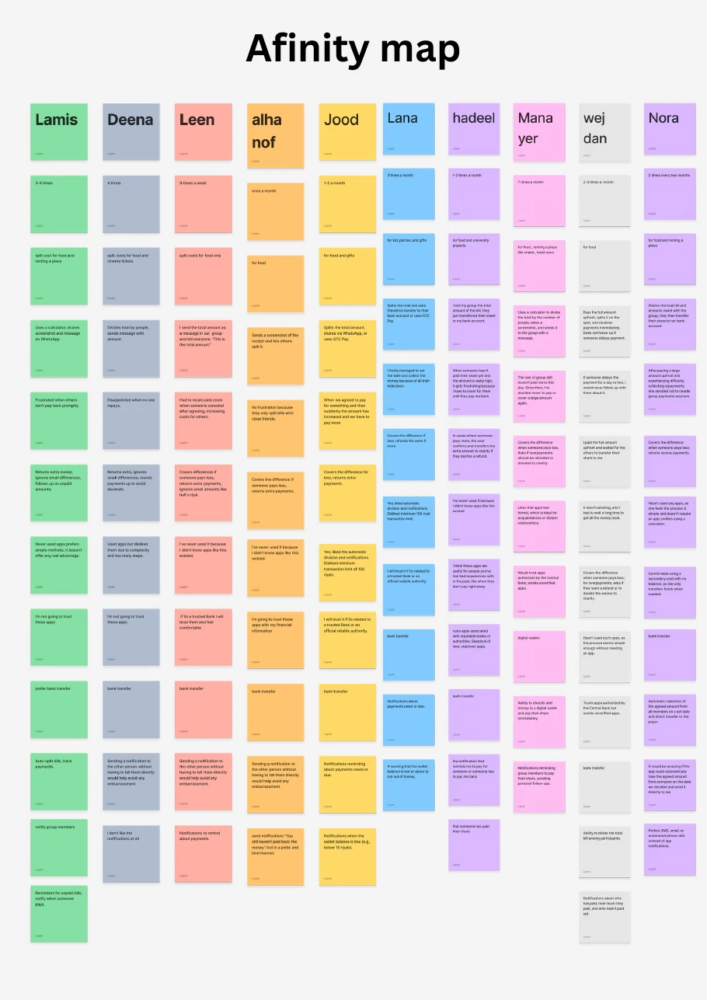
What I heard
Nobody struggled with the math. The pain was social.
named late or missing repayments as their most frustrating experience.
quietly cover the difference themselves when someone pays less, instead of asking.
would trust an app with their money only if a bank or official authority stands behind it.
pay each other back by bank transfer.
"There were seven of us, but only three transferred their share. The rest still haven't paid me to this day."Participant, 27
"Sending a notification to the other person without having to tell them directly would help avoid any embarrassment."Said, in nearly these words, by three participants
"It would be amazing if the app could automatically take the agreed amount from everyone on the date we decided."Participant, 28
The apps people had tried didn't help either. One quit because of too many steps, two disliked a 100 SAR minimum, and three didn't know such apps existed.
The market
I compared five apps people in Saudi Arabia already use for paying and splitting, on interface and experience, then on features.
| Feature | STC Pay | Al Rajhi | Tabby | Tamara | Circlys | Qatiah |
|---|---|---|---|---|---|---|
| Split a bill with a group | ● | ● | – | – | ● | ● |
| Group expense tracking | – | – | – | – | ● | ● |
| Payment reminders | ● | ● | ● | ● | ● | ● |
| Expense breakdown | – | – | – | – | – | ● |
| QR payments | ● | – | – | – | – | ● |
| Ease of use | Moderate | Low | High | High | High | High |
| Trust | High | High | Moderate | Moderate | Low | Target: high |
One bank's split tool was hard to find because it isn't called what people call it.
People say قطية. The bank's app labels the feature تقسيم الفواتير, "bill splitting", and tucks it away. Qatiah uses the word people actually say.
Persona
The research came together in one persona: a social, busy 27-year-old who likes simple tools, avoids awkward follow-ups and won't trust an app that isn't backed by a bank.
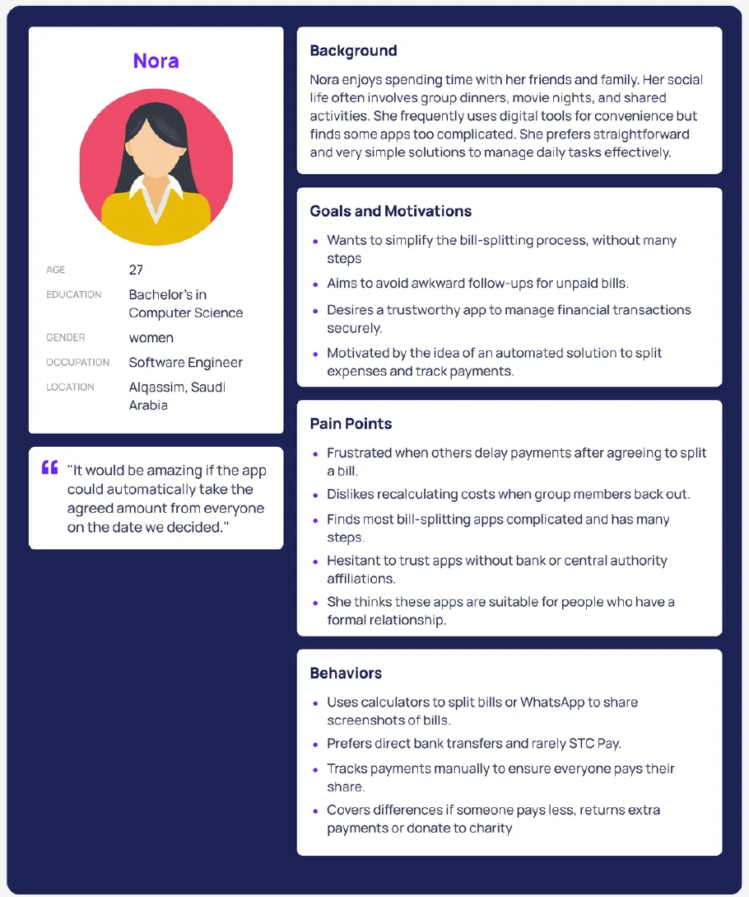
From insight to screen
Every main screen answers something I heard. Pick an insight to see where it went.
Design system
Before the screens, I set up the foundations: a color system where every color has a job, a Poppins type scale, a spacing grid and a component library.
#2F80EDMain buttons, links, primary highlights#56CCF2Secondary actions and accents#27AE60Success and paid#F2C94CWarnings and pending payments#EB5757Errors and overdue alerts#1E1E1EHeadings and body textGreen, yellow and red do double duty: they are the payment states. A paid, due-soon or overdue bill reads at a glance, before any text.
Component library
All screens
Twelve screens, from onboarding to profile. Scroll sideways.
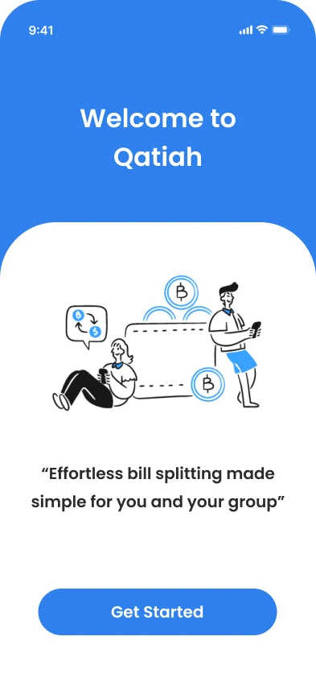
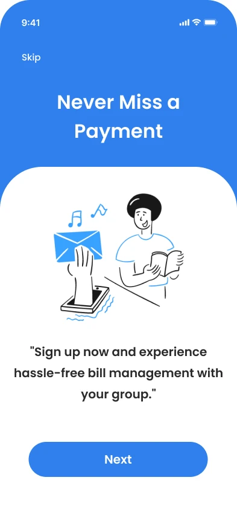
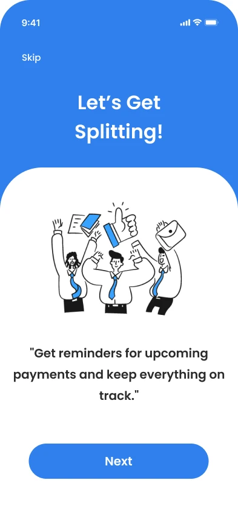
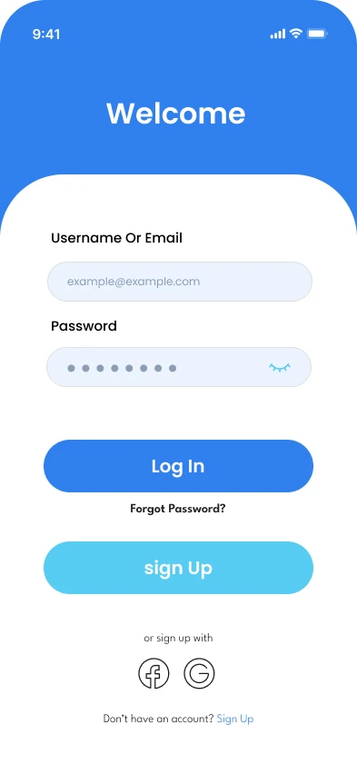
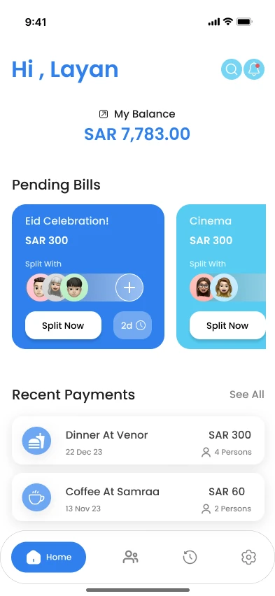
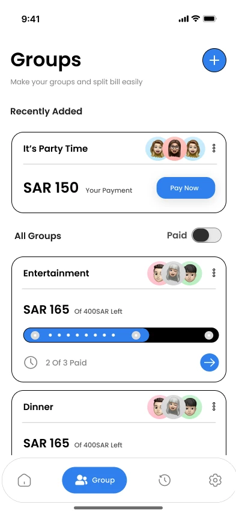
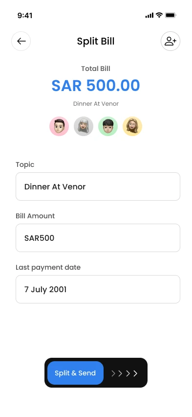
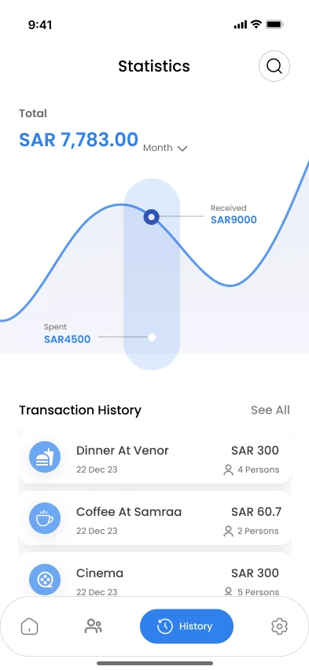
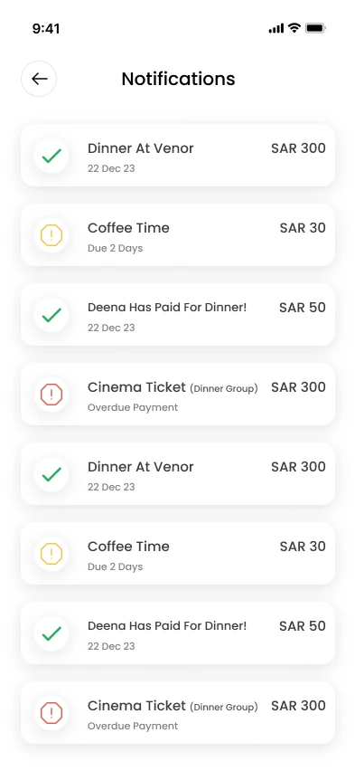
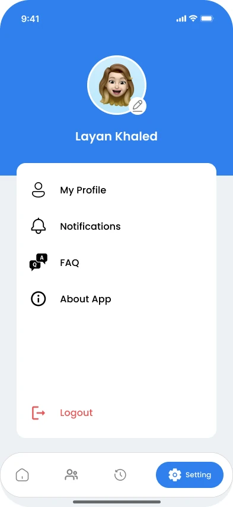
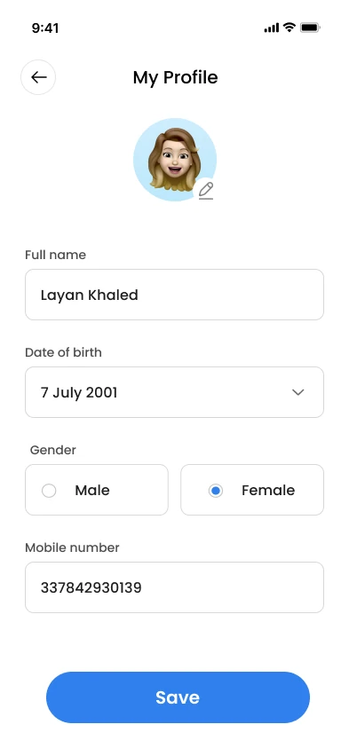
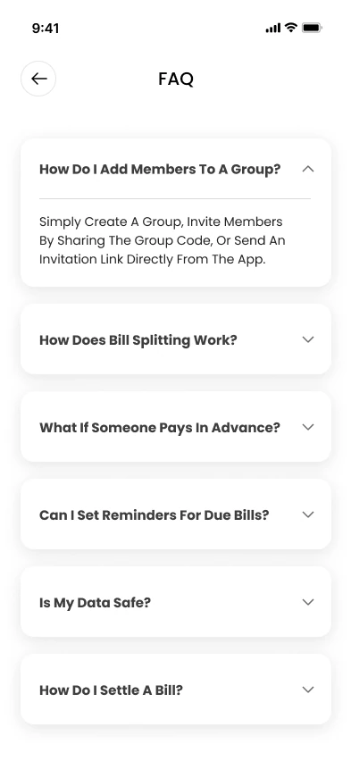
What I'd do next
Test the split flow with the people I interviewed. The design answers what they told me; a usability test would show whether it works the way they actually behave.
Give notifications a choice of channel. Two participants said they dislike app notifications, and one asked for SMS or email instead.
Treat trust as a product requirement. No screen can earn it alone. Backing by a bank or official platform has to be part of the product, not only the interface.